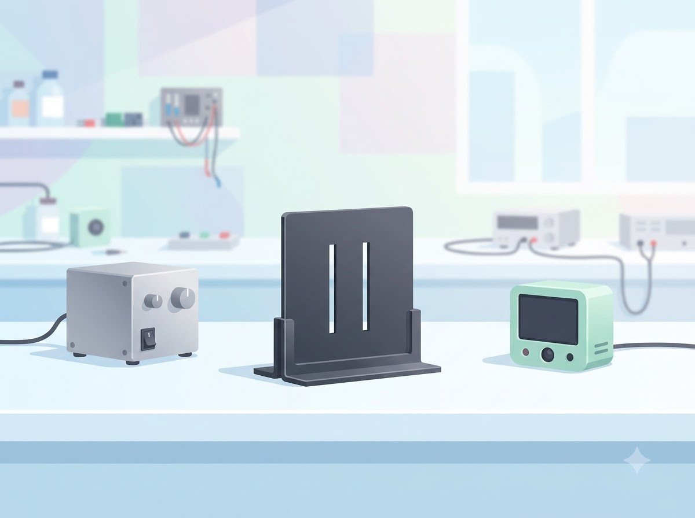
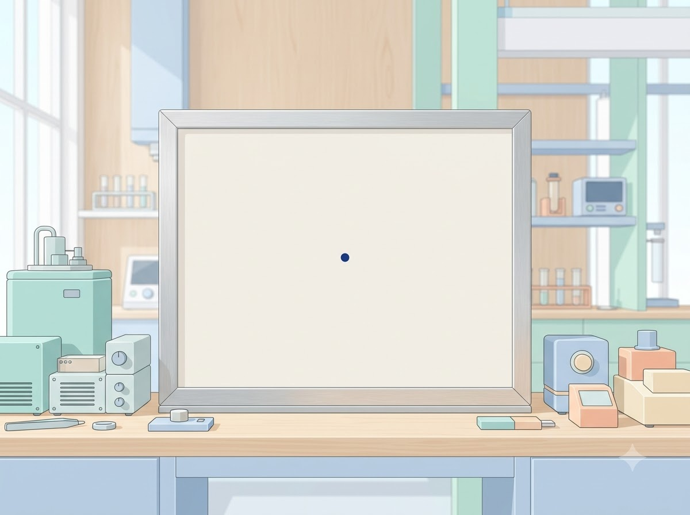
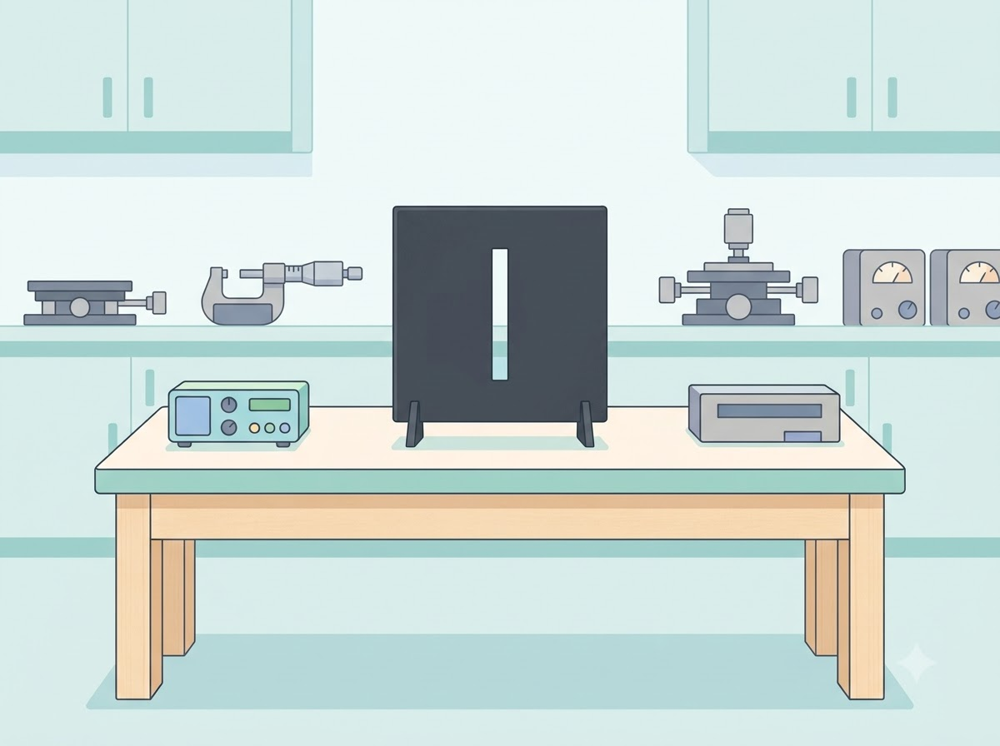
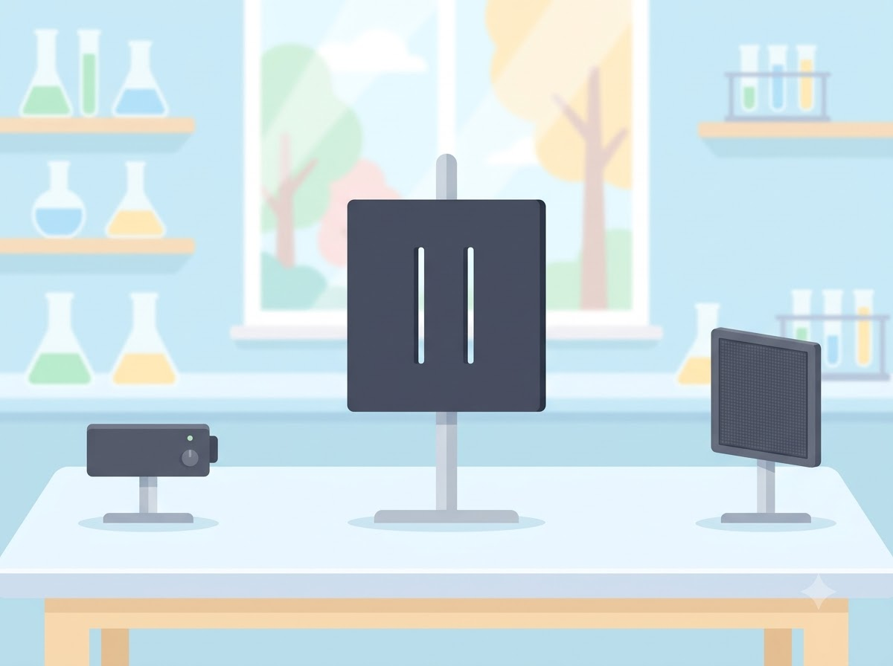
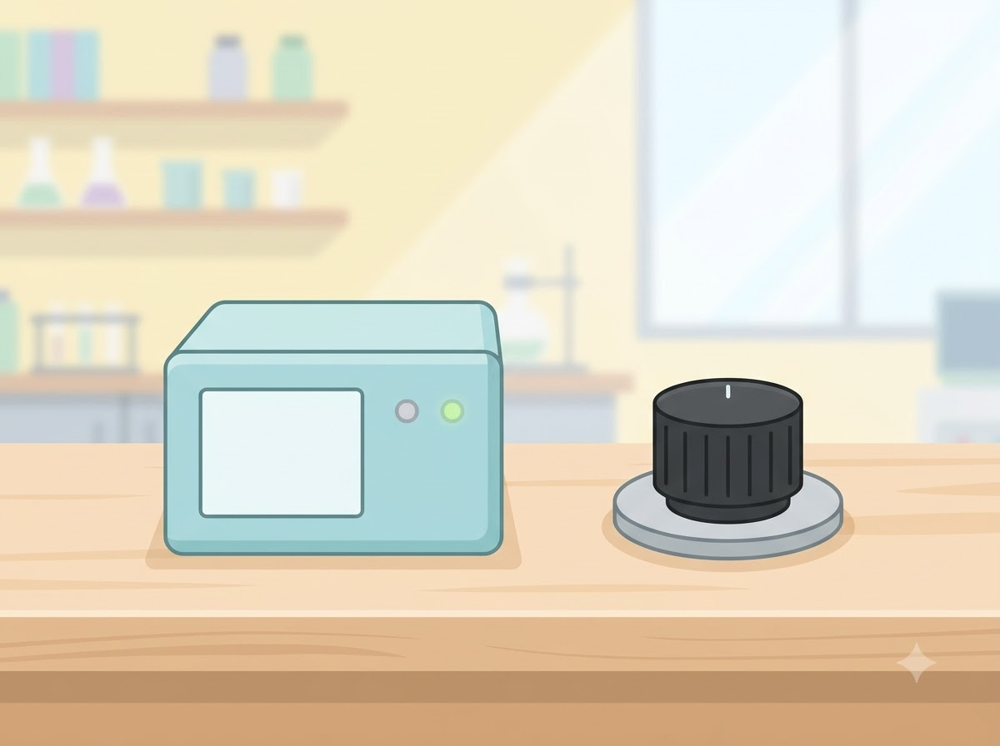

실행 A
비어 있음
양자 실험 설계실 quantum-experiment-lab · P0
고등학교 심화 물리·수학 · 25분 활동 · 설계 검증용 예시값
개별 검출 사건(점 하나)과 누적 확률분포(무늬 전체)를 구분합니다. 슬릿에서 검출면까지의 궤적은 그리지 않습니다.
01 · 예측 (3분)
아래는 현재 조건(간섭 유지 · κ=2.0 · φ=0)에서 계산된 이론 분포의 모양 설명입니다. 그래프 수치는 다음 단계에서 직접 실행해 확인합니다.
주의: ‘사람이 쳐다봐서 바뀐다’가 아니라, 환경과의 물리적 상호작용을 단순화한 모형(경로 정보 조건)의 차이입니다.


02 · 장치 · 03 · 누적 (5분 + 5분 + 7분)
조건을 바꾸면 이전 점과 섞지 않고 새 실행으로 분리합니다. 기존 실행의 조건·seed·N은 항상 함께 표시됩니다. 장치 그림은 모식이며 실측 축척이 아닙니다.
대기 중 — 조건을 정하고 누적 실행을 누르세요
○ 대기 중 (ready)
점의 출현은 검출 사건입니다. 점의 세로 위치는 겹쳐 보이지 않게 흩뿌린 것으로, 물리량이 아닙니다. 슬릿에서 검출면까지의 실제 궤적을 그리지 않습니다.
| 칸 | 중심 x | 이론 P | 관측 수 | 관측 빈도 |
|---|---|---|---|---|
| 아직 실행이 없습니다. | ||||
04 · 조건 비교 (7분)
간섭항이 있는 경우와 없는 모형, φ=0과 φ=π를 같은 N으로 비교합니다. P0 모형에서는 한 슬릿과 간섭 소실의 모양이 같게 나옵니다 (차이는 통과율이며 P0에서 비교하지 않습니다). 시행 수가 다르면 매번 오차가 줄어든다고 주장하지 않습니다.



비어 있음
비어 있음
| 항목 | A | B |
|---|---|---|
| A와 B를 저장하면 비교표가 채워집니다. | ||
표준 이중슬릿 원거리식 cos²(πd·y/λL)·sinc²(πa·y/λL)만 쓴다. x축은 실제 검출면 y(mm)이며 모형 x와 물리적 스케일이 다르므로 겹쳐 그리지 않는다. 정규화는 각자 검출면에서 하고 통과율은 비교하지 않는다. 근거: docs/P1-NOTES.md §2.
유한폭 효과는 sinc 포락선으로 들어 있다. Fresnel 수 a²/(λL)가 0.1 이상이면 "근사 신뢰 낮음"을 표시한다.
05 · 기록 (5분) — 단일 점과 전체 분포의 차이를 설명
| 저장 시각 | 조건 | seed·N | 관찰 |
|---|---|---|---|
| 저장된 기록이 없습니다. | |||
저장이 불가하면 현재 세션 목록과 JSON 내보내기를 사용하세요. 전이 과제: 한 슬릿을 닫은 경우와 경로 정보가 있는 두 슬릿을 구분해 설명해 보세요.